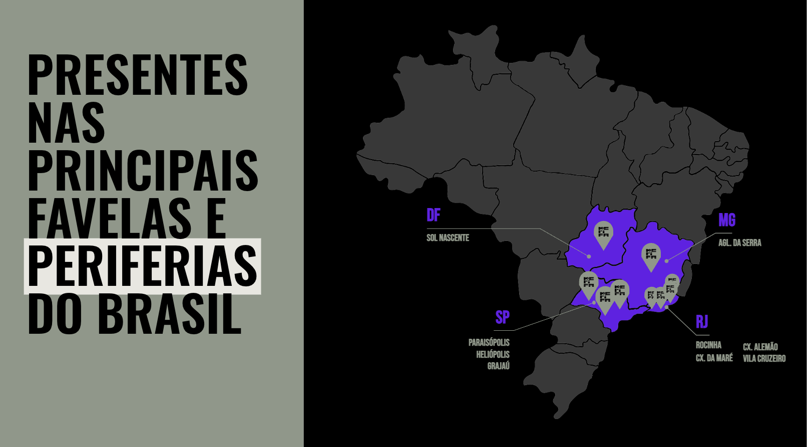
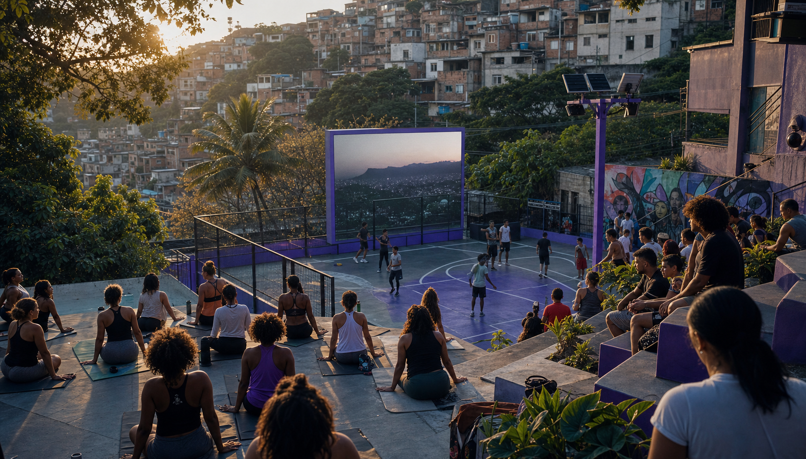

Mídia de território
Presença construída a partir da geografia afetiva, comercial e cultural das periferias.
Quem somos
NASCEMOS PARA LEVAR MARCAS ONDE O CONSUMO ACONTECE.
Somos a infraestrutura que faltava para conectar marcas, território, presença física e potência cultural em uma plataforma nacional.
TERRITÓRIO. EXPERIÊNCIA. CONEXÃO REAL.
Infraestrutura
Reunimos mídia, ativações, inventário territorial, dados, mobilidade, creators e experiências de bem-estar em uma operação única, desenhada para o Brasil real.
Isso permite levar marcas para dentro dos espaços onde confiança, circulação e decisão de consumo acontecem de verdade.
Falar com um especialistaPresença construída a partir da geografia afetiva, comercial e cultural das periferias.
Experiências que associam a marca a cuidado, uso qualificado do espaço e permanência.
Um modelo completo que articula inventário, narrativa, creators, dados e ativações.
Capilaridade nacional com legitimidade local para marcas que precisam ser vistas e acreditadas.

Presença
Nossa presença nasce onde a vida pulsa e onde o consumo acontece: dentro das comunidades, nos espaços de convivência, circulação e influência cotidiana.
Insight de confiança
dos moradores de favelas e periferias afirmam confiar mais em mídias de território do que em mídias tradicionais como TV e jornais.
Esse dado mostra por que nossa presença gera mais do que alcance: ela cria legitimidade, proximidade e uma leitura de marca mais crível.
Falar com um especialistaEcossistema vivo
Quando a marca entra no território por meio de experiências reais, a mídia deixa de ser interrupção e passa a ser parte de um ambiente de encontro, bem-estar e valor compartilhado.

Vamos conversar